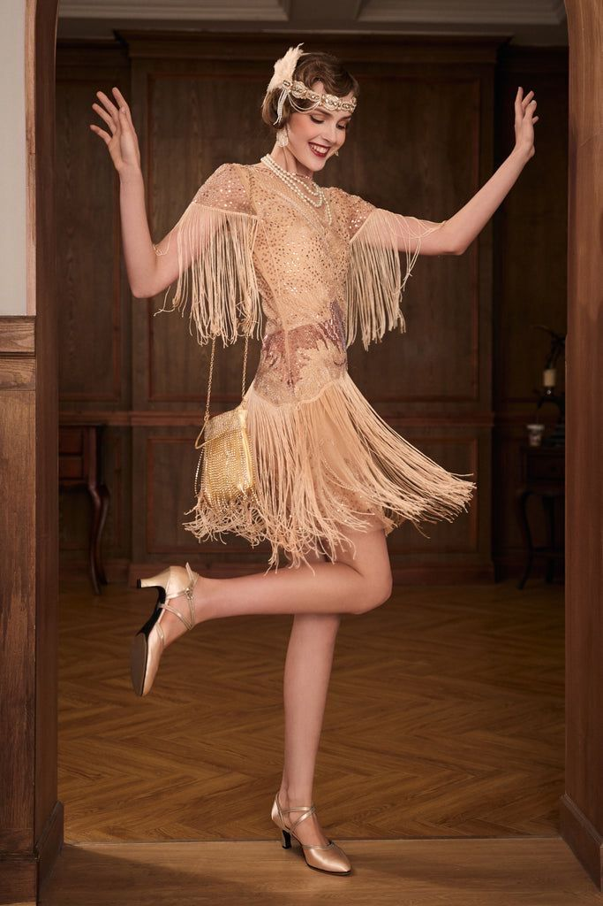
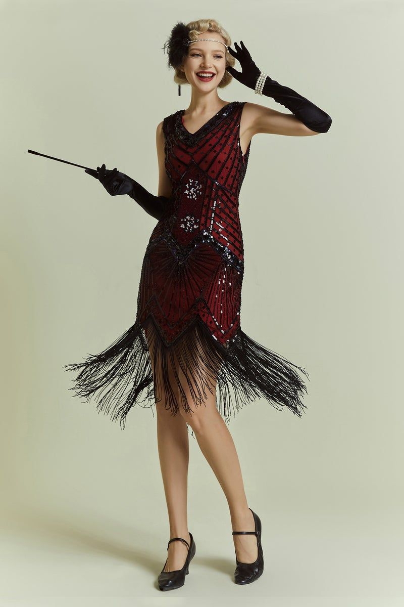
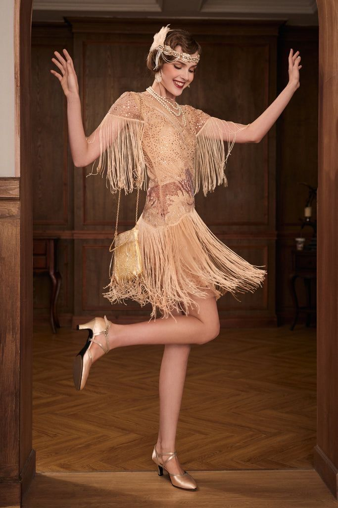
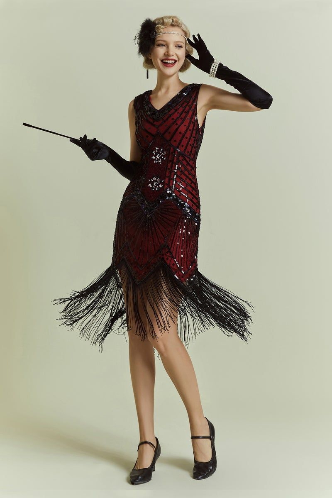

Global Revival: Fashion's Return to Heritage
Fashion is cyclical, and today's trends are proof of that. From Eastern elegance to Western rebellion, designers and fashion lovers worldwide are breathing new life into traditional silhouettes. The Global Revival celebrates the fusion of heritage and modernity, where vintage styles meet contemporary sensibilities. Explore how Eastern and Western fashion icons are making their comeback in the modern wardrobe.
Eastern Revival

Pishwas, the regal silhouette rooted in Mughal heritage, is making a striking comeback in today’s fashion scene. Once reserved for royal courts and festive occasions, this flared, floor-length garment is now being reimagined by designers and embraced by Gen Z for its timeless elegance and dramatic flair. Modern pishwas styles blend traditional embroidery with contemporary cuts, making them a go-to choice for weddings, cultural events, and even casual wear. Their revival reflects a broader movement toward honoring heritage while expressing individuality through fashion.
Ajrak is making a stylish comeback as designers blend its bold, traditional block prints with modern cuts. Once worn by villagers, it now appears in dresses, scarves, and jackets—celebrated for its heritage and timeless appeal.
Chunri, with its vibrant tie-dye patterns and festive charm, is making a joyful return to fashion. Traditionally worn during celebrations, it's now being reimagined in modern cuts like flowy dresses and chic dupattas. This revival blends cultural nostalgia with contemporary flair, making Chunri a symbol of heritage embraced by the new generation.
Farshi shalwar, once a symbol of Mughal royalty, is sweeping back into fashion with its dramatic, floor-grazing elegance. Designers are modernizing its voluminous silhouette using lighter fabrics and minimal embellishments, making it both regal and wearable. Popular during festive seasons and cultural events, Farshi is now a favorite among Gen Z for its blend of heritage and flair.
Western Revival
Corsets are back—and they’re no longer just hidden under gowns. Once seen as restrictive, they’ve been reimagined as bold fashion statements layered over shirts, dresses, and even streetwear. This revival blends historical elegance with modern empowerment, turning the corset into a symbol of style and individuality.
 



1920s Flapper dresses are dazzling their way back into the spotlight, channeling the rebellious spirit of the 1920s. With their fringe, sequins, and loose silhouettes, these iconic garments are being reimagined for modern wardrobes—seen on red carpets, themed parties, and even everyday glam looks. Their comeback celebrates freedom, movement, and bold self-expression.
Denim overalls are back in style, riding the wave of 90s nostalgia and Gen Z’s love for retro-cool fashion. Once seen as utilitarian workwear or childhood staples, they’ve been reimagined with chic cuts, wide legs, and cropped fits. Celebrities and influencers are styling them with tank tops, blazers, and boots, turning overalls into a versatile canvas for self-expression. Their comeback proves that comfort and creativity can go hand in hand.
Studded, patched, and rebellious - punk leather jackets are revived with DIY flair and attitude.